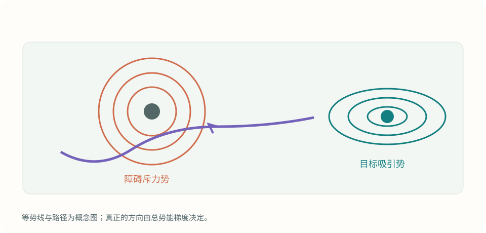
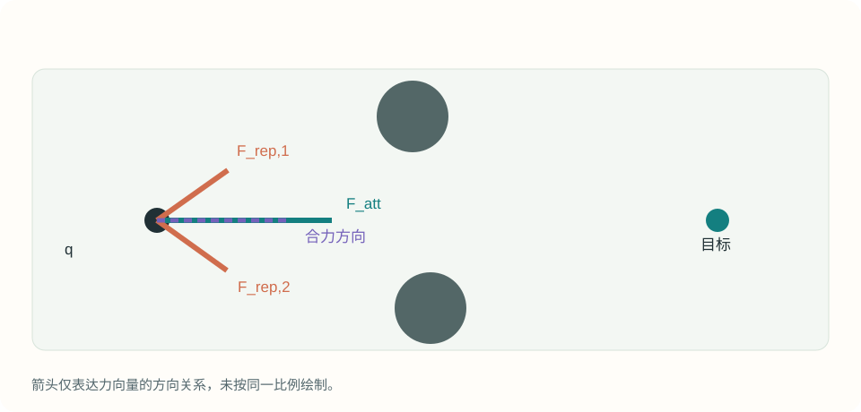
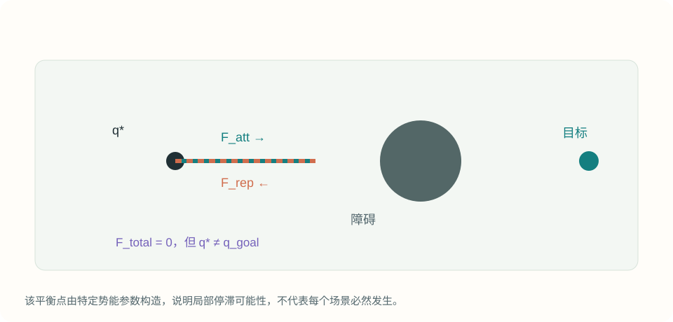

人工势场法：为什么机器人会在非目标位置停滞
将目标吸引与障碍斥力写成势能函数，再用负梯度产生运动方向；同时理解局部极小、窄通道振荡与全局引导为何不可缺少。
目标像一块低势能区域，障碍像一座势能山
人工势场法（Artificial Potential Field, APF）把机器人当前位置看作一个受虚拟力作用的点：目标产生吸引势，障碍物产生斥力势，机器人沿总势能下降的方向移动。这个想法把几何避障变成一个局部连续优化问题，计算直观、更新快速，尤其适合解释局部反应式导航。
Khatib 在 1986 年将人工势场用于机械臂和移动机器人实时避障，并讨论了时变势场处理运动障碍的方式。需要注意：势场梯度只给出局部下降方向，不会自动给出从起点到目标的全局可达性证明。
ROBOT MOTION PLANNING · 17

先定义势能，再通过负梯度得到力
令机器人位置为 q∈R²，目标位置为 q_g。一个常见的二次吸引势为：
对障碍物，令 ρ(q) 表示机器人到障碍边界的净距离，ρ₀ 是斥力影响范围。常见斥力势写成：
总势能是 U=U_att+ΣU_rep，虚拟力定义为 F(q)=−∇U(q)。机器人可以沿 F 的方向移动，也可以将它映射为速度、转向或控制输入。若把 ρ 定义成点到障碍表面的净距离，必须保证障碍已按机器人足迹膨胀；否则中心点无碰撞并不代表车体无碰撞。
势能梯度把多个障碍的影响合成一个方向
吸引力为 F_att=−ζ(q−q_g)。当 ρ≤ρ₀ 时，斥力大小随着净距离减小而迅速增大，方向沿着离开最近障碍边界的法向：
如果存在多个障碍，总斥力通常通过各障碍贡献求和。注意距离场在障碍尖角、多个最近点等位置可能不可微；离散栅格距离变换得到的梯度也会受到分辨率和插值影响。势能函数平滑，不代表执行轨迹自动平滑。
ROBOT MOTION PLANNING · 17

最危险的情况：合力为零，但目标还很远
当吸引力和斥力大小相等、方向相反时，可能出现 ∇U(q*)=0。如果这个点不是目标，机器人就会停在局部平衡点。它可能是局部极小值，也可能是鞍点；单纯检测“力接近零”无法证明机器人已经到达目标。
下面的反例把目标放在 x=5，圆形障碍中心放在 x=2、半径 0.5，机器人位于 x=1.2。选择一个特定的 η，使吸引与斥力恰好抵消。这个参数只是为构造数学反例而求得，不是经过调参的导航结果。
ROBOT MOTION PLANNING · 17

缓解局部极小值：改变规划结构，而不是只调一个系数
- 全局路线引导：先由 A*、PRM 或 RRT 给出拓扑上合理的通道，再用局部势场做避障修正。
- 谐和势函数：在自由空间求解 Laplace 方程的边值问题，可避免经典调和势场中的某些伪局部极小；数值离散、边界条件与收敛误差仍需审查。
- 切向/涡旋分量：在斥力外加入沿障碍切线的引导，改变简单正面相撞时的方向选择，但需要处理左右绕行决策与稳定性。
- 停滞检测与逃逸：检测长时间位移很小、目标距离没有下降等情况，切换到全局重规划或受约束扰动。
- 动态障碍：势场随时间变化并不自动等价于预测碰撞；仍应进行轨迹预测和安全约束。
Koren 与 Borenstein 对势场方法的固有限制作了系统分析，指出局部极小、窄通道和振荡等问题。不存在一个只靠“把斥力权重调大”就能普遍解决这些问题的参数。
用代码验证非目标平衡点与斥力方向
Python 3.10+，仅用标准库。示例直接计算势能和解析梯度，不模拟有惯性的真实机器人。它断言：构造出的非目标点势能为正、合力接近零；超过斥力影响半径后，斥力项消失；当吸引力置零时，斥力方向指向远离障碍的一侧。
import math
def potential_and_force(q,goal,center,radius,zeta,eta,rho0):
"""Point robot; rho is distance from inflated obstacle boundary."""
x,y=q; gx,gy=goal; ox,oy=center
dx,dy=x-ox,y-oy
center_distance=math.hypot(dx,dy)
rho=center_distance-radius
if rho<=0:
raise ValueError("robot center is inside the obstacle")
fx=-zeta*(x-gx)
fy=-zeta*(y-gy)
potential=.5*zeta*((x-gx)**2+(y-gy)**2)
if rho<rho0:
term=1/rho-1/rho0
potential+=.5*eta*term**2
magnitude=eta*term/(rho*rho)
fx+=magnitude*dx/center_distance
fy+=magnitude*dy/center_distance
return potential,(fx,fy)
# At q=(1.2,0), attraction points right and repulsion points left.
# Choose eta only to expose the exact cancellation; it is not a tuned robot parameter.
rho=.3
eta=3.8*rho*rho/(1/rho-1/1.5)
U,F=potential_and_force((1.2,0.),(5.,0.),(2.,0.),
radius=.5,zeta=1.,eta=eta,rho0=1.5)
assert U>0 and math.hypot(*F)<1e-9 # non-goal equilibrium
# Outside the influence radius, the repulsive term is exactly zero.
_,F_far=potential_and_force((0.,3.),(5.,0.),(2.,0.),
radius=.5,zeta=1.,eta=eta,rho0=1.5)
assert F_far==(5.,-3.)
# With attraction cancelled at q, the remaining force points away from obstacle.
q=(1.4,.3)
_,F_rep=potential_and_force(q,q,(2.,0.),.5,1.,1.,1.5)
radial=(q[0]-2.,q[1])
assert F_rep[0]*radial[0]+F_rep[1]*radial[1]>0
print("non-goal equilibrium potential:",round(U,3),
"net force:",tuple(round(v,9) for v in F))
print("far-field force:",F_far,"repulsion points outward:",True)真实 APF 还需处理障碍边界处的数值奇异、最近点不唯一、多个障碍叠加、控制器惯性与离散步长。这个程序只验证一个圆形障碍的二维点模型，不能作为机器人安全性或全局可达性的测试。
势场的计算很轻，但它优化的只是局部势能
APF 不自动优化全局路径长度，也不保证找到全局最短路线；负梯度方向不一定满足车辆最小转弯半径或机械臂动力学。若将势场力直接当成速度命令，机器人惯性、控制延迟和速度饱和会使实际轨迹偏离梯度流。
工程实现至少要加入机器人足迹、碰撞检查、速度/加速度限制、目标邻域停止条件、局部停滞检测和全局恢复策略。势场的一个合理定位是低成本的局部引导或避障代价，而不是无条件替代全局规划器。
原始论文与局限性分析
- Khatib (1986), Real-Time Obstacle Avoidance for Manipulators and Mobile Robots
- Koren & Borenstein (1991), Potential Field Methods and Their Inherent Limitations for Mobile Robot Navigation
- Szczepanski (2026), Artificial potential fields revisited: advances, limitations, and hybrid solutions in modern robotics — 近期综述